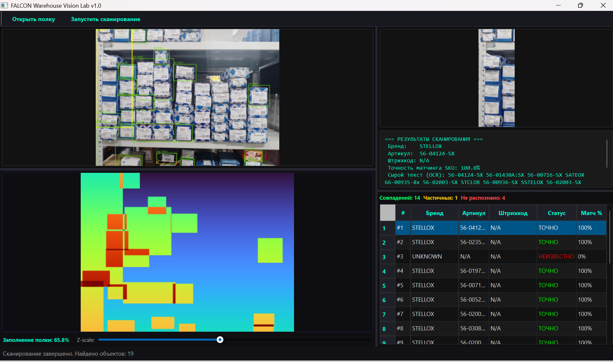

Живые доказательства работы
Никаких абстрактных картинок. Ниже — реальные протоколы сканирования из нашей программы: сопоставление деталей и тепловая карта заполнения полок.
4 ключевые задачи, которые решает система
Автоматизация рутинных складских операций с помощью видеокамер или обычных смартфонов
Проверка сборки заказов (Исключение пересорта)
Камера мгновенно считывает названия, артикулы и маркировку со всех коробок в собранном заказе, сверяет их с накладной из 1С и сразу показывает: заказ собран верно или положена чужая деталь.
Быстрый поиск товара на стеллажах (Помощник)
Кладовщик вводит нужный артикул и ведет камерой смартфона вдоль полки. Программа сама находит нужный товар, подсвечивает его на экране и подает звуковой сигнал.
Оценка заполняемости полок и стеллажей
Система анализирует свободное пространство на стеллажах по видео/фото и вычисляет процент заполнения полок, помогая эффективно использовать складские площади и находить пустые места.
Быстрая инвентаризация остатков на ходу
Сотрудник проходит вдоль рядов с включенной камерой. Программа распознает все стоящие на полках коробки, считывает их данные, считает точное количество и автоматически формирует ведомость расхождений с базой 1С.
Интеграция с вашей базой 1С и маркировкой
Прямая синхронизация данных без ручного переноса таблиц и лишних посредников
Что система забирает из базы 1С:
Программа напрямую подключается к вашей базе 1С. Она сопоставляет видеоряд с официальными справочниками компании:
-
✓
Справочники номенклатуры: названия, официальные артикулы брендов.
-
✓
Таблицы аналогов (кросс-номера): автоматическое определение совместимых замен.
-
✓
Штрихкоды и коды упаковки: EAN-13, ITF-14.
-
✓
Обязательная маркировка: коды DataMatrix («Честный ЗНАК»).
Автоматическая сверка с видеокамеры:
Камера мгновенно распознает сырой текст с коробок и сопоставляет его со строками накладной из 1С: